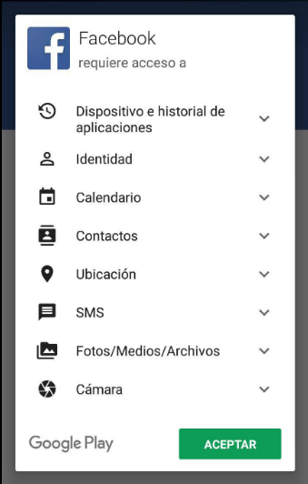

Los rumores que ya muchos sabíamos que eran verdad sobre el uso de información por parte de Facebook, además de que accede a datos aún cuando nosotros no hemos accedido no es reciente. Pero con el último ruido que ha habido sobre la empresa debido al escándalo de Cambridge Analytica ha hecho que por muchos se den cuenta de algunas cosas, entre ellas, La aplicación de Facebook lee nuestros mensaje y registro de llamadas aún cuando nosotros no hemos dado permisos para ello.
Twitter: La fuente de descubrimiento
En estos días diversos usuarios a través de Twitter brindaron información de como ellos encontraban diversa información que ellos no dieron acceso en los datos de Facebook, y esta vez ha sido asi. Un usuario de Twitter, @dylanmckaynz, descubrió que extrayendo sus datos de Facebook encontró que esta aplicación para Android es capaz de leer nuestro registro de llamas, lo cual va en contra de la privacidad.
¿ Como poder usar Facebook en nuestro móvil?
Los permisos a los que Facebook estaria atacando son: Contactos, Llamadas y Mensajes SMS. En teoría, si nunca le damos permisos a la aplicación, no será capaz de haber accedido a los datos que ahora son foco de polémica, pero al parecer existe un pequeño vacío.
Tienes que saber que si utilizaste la aplicación de Facebook en versiones antiguas del sistema operativo Android, es decir, antes de la version 4.1, la aplicación ha tenido permisos para acceder a nuestros datos hasta octubre del 2017. Sin embargo, hay que dejar en claro que la aplicación de IOS nunca ha tenido problemas.
La mejor forma de acceder a Facebook puede que sea a través del navegador web que tenemos en nuestro móvil, además de que es mucho más rápida, mejor acceso, tenemos todas las funciones.
"La privacidad en Internet es imposible, pero podemos poner al menos cierto límite"
Facebook ha respondido aclarando que el usuario tiene siempre la potestad de retirarle a Facebook y a Messenger el acceso a los contactos, al registro de SMS y llamadas. La empresa alega que hace uso de esos datos para mejorar las relaciones entre sus usuarios y que nunca los ha vendido, ni venderá, aunque, con lo visto, nosotros dudamos mucho que sea así.